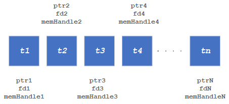

QNN HTP Shared Buffer Tutorial¶
Introduction¶
This tutorial describes how to use data buffers for shared access in between processing domains in QNN HTP backend. Using shared buffers can eliminate data copy in between client code on the host CPU and HTP accelerator.
The HTP backend supports multiple types of shared memory buffers, as summarized in the table below. On Android platforms, these shared memory types are typically used in two use cases:
FastRPC: QNN APIs are invoked on the host CPU and executed on the DSP via FastRPC.
Non-RPC (Native HTP): QNN APIs are invoked natively on the DSP.
The table below indicates which buffer types are supported in each use case.
Qnn_MemDescriptor_t Type |
QnnMemHtp_Descriptor_t Type |
Descriptor |
FastRPC |
Non-RPC |
|---|---|---|---|---|
QNN_MEM_TYPE_ION |
Not Applicable |
|
Supported |
Not Supported |
QNN_MEM_TYPE_CUSTOM |
QNN_HTP_MEM_SHARED_BUFFER |
|
Supported |
Not Supported |
QNN_MEM_TYPE_CUSTOM |
QNN_HTP_MEM_WEIGHTS_BUFFER |
|
Supported only with sequential execution |
Not Supported |
QNN_MEM_TYPE_CUSTOM |
QNN_HTP_MEM_SHARED_SPILLFILL_BUFFER |
|
Supported only with sequential execution |
Supported |
QNN_MEM_TYPE_CUSTOM |
QNN_HTP_MEM_SHARED_VTCMBACKUP_BUFFER |
|
Not Supported |
Supported |
Note
This tutorial is only focused on the shared buffer usage. There are some prerequisites in the SDK example code not discussed in detail here. Users can refer to the corresponding part in the QNN documentation, or refer to the SampleApp.
SampleApp documentation: general/sample_app:Sample App Tutorial
SampleApp code: ${QNN_SDK_ROOT}/examples/QNN/SampleApp
Using QNN_MEM_TYPE_ION with QNN API¶
The following is the representation of ION shared buffers, where each tensor has its own shared buffer with its own unique memory pointer, file descriptor, and memory handle.

An example is shown below:
1// QnnInterface_t is defined in ${QNN_SDK_ROOT}/include/QNN/QnnInterface.h
2QnnInterface_t qnnInterface;
3// Init qnn interface ......
4// See ${QNN_SDK_ROOT}/examples/QNN/SampleApp code
5
6// Qnn_Tensor_t is defined in ${QNN_SDK_ROOT}/include/QNN/QnnTypes.h
7Qnn_Tensor_t inputTensor;
8// Set up common setting for inputTensor ......
9/* There are 2 specific settings for shared buffer:
10* 1. memType should be QNN_TENSORMEMTYPE_MEMHANDLE; (line 40)
11* 2. union member memHandle should be used instead of clientBuf, and it
12* should be set to nullptr. (line 41)
13*/
14
15
16size_t bufSize;
17// Calculate the bufSize base on tensor dimensions and data type ......
18
19#define RPCMEM_HEAP_ID_SYSTEM 25
20#define RPCMEM_DEFAULT_FLAGS 1
21
22// Allocate the shared buffer
23uint8_t* memPointer = (uint8_t*)rpcmem_alloc(RPCMEM_HEAP_ID_SYSTEM, RPCMEM_DEFAULT_FLAGS, bufSize);
24if (nullptr == memPointer) {
25 // handle errors
26}
27
28int memFd = rpcmem_to_fd(memPointer);
29if (-1 == memfd) {
30 // handle errors
31}
32
33// Fill the info of Qnn_MemDescriptor_t and regist the buffer to QNN
34// Qnn_MemDescriptor_t is defined in ${QNN_SDK_ROOT}/include/QNN/QnnMem.h
35Qnn_MemDescriptor_t memDescriptor = QNN_MEM_DESCRIPTOR_INIT;
36memDescriptor.memShape = {inputTensor.rank, inputTensor.dimensions, nullptr};
37memDescriptor.dataType = inputTensor.dataType;
38memDescriptor.memType = QNN_MEM_TYPE_ION;
39memDescriptor.ionInfo.fd = memfd;
40inputTensor.memType = QNN_TENSORMEMTYPE_MEMHANDLE;
41inputTensor.memHandle = nullptr;
42Qnn_ContextHandle_t context; // Must obtain a QNN context handle before memRegister()
43// To obtain QNN context handle:
44// For online prepare, refer to ${QNN_SDK_ROOT}/docs/general/sample_app.html#create-context
45// For offline prepare, refer to ${QNN_SDK_ROOT}/docs/general/sample_app.html#load-context-from-a-cached-binary
46Qnn_ErrorHandle_t registRet = qnnInterface->memRegister(context, &memDescriptor, 1u, &(inputTensor.memHandle));
47if (QNN_SUCCESS != registRet) {
48 rpcmem_free(memPointer);
49 // handle errors
50}
51
52/**
53* At this place, the allocation and registration of the shared buffer has been complete.
54* On QNN side, the buffer has been bound by memfd
55* On user side, this buffer can be manipulated through memPointer.
56*/
57
58/**
59* Optionally, user can also allocate and register shared buffer for output as adove codes (lines 7-46).
60* And if so the output buffer also should be deregistered and freed as below codes (lines 66-70).
61*/
62
63// Load the input data to memPointer ......
64
65// Execute QNN graph with input tensor and output tensor ......
66
67// Get output data ......
68
69// Deregister and free all buffers if it's not being used
70Qnn_ErrorHandle_t deregisterRet = qnnInterface->memDeRegister(&tensors.memHandle, 1);
71if (QNN_SUCCESS != registRet) {
72 // handle errors
73}
74rpcmem_free(memPointer);
Using QNN_HTP_MEM_SHARED_BUFFER with QNN API¶
The following is the representation of a Multi-Tensor shared buffer where a group of tensors is mapped to single shared buffer. This single shared buffer has one memory pointer and a file descriptor, however each tensor has its own memory pointer offset and memory handle.

An example is shown below:
1// QnnInterface_t is defined in ${QNN_SDK_ROOT}/include/QNN/QnnInterface.h
2QnnInterface_t qnnInterface;
3// Init qnn interface ......
4// See ${QNN_SDK_ROOT}/examples/QNN/SampleApp code
5
6// Total number of input tensors
7size_t numTensors;
8
9// Qnn_Tensor_t is defined in ${QNN_SDK_ROOT}/include/QNN/QnnTypes.h
10Qnn_Tensor_t inputTensors[numTensors];
11// Set up common setting for inputTensor ......
12/* There are 2 specific settings for shared buffer:
13* 1. memType should be QNN_TENSORMEMTYPE_MEMHANDLE; (line 40)
14* 2. union member memHandle should be used instead of clientBuf, and it
15* should be set to nullptr. (line 41)
16*/
17
18// Calculate the shared buffer size
19uint64_t totalBufferSize;
20for (size_t tensorIdx = 0; tensorIdx < numTensors; tensorIdx++) {
21 // Calculate the tensorSize based on tensor dimensions and data type
22 totalBufferSize += tensorSize;
23}
24
25#define RPCMEM_HEAP_ID_SYSTEM 25
26#define RPCMEM_DEFAULT_FLAGS 1
27
28// Allocate the shard buffer
29uint8_t* memPointer = (uint8_t*)rpcmem_alloc(RPCMEM_HEAP_ID_SYSTEM, RPCMEM_DEFAULT_FLAGS, totalBufferSize);
30if (nullptr == memPointer) {
31 // handle errors
32}
33
34// Get a file descriptor for the buffer
35int memFd = rpcmem_to_fd(memPointer);
36if (-1 == memfd) {
37 // handle errors
38}
39
40// Regiter the memory handles using memory descriptors
41// This is the offset of the tensor location in the shared buffer
42uint64_t offset;
43for (size_t tensorIdx = 0; tensorIdx < numTensors; tensorIdx++) {
44 // Fill the info of Qnn_MemDescriptor_t and register the descriptor to QNN
45 // Qnn_MemDescriptor_t is defined in ${QNN_SDK_ROOT}/include/QNN/QnnMem.h
46 Qnn_MemDescriptor_t memDescriptor;
47 memDescriptor.memShape = {inputTensors[tensorIdx].rank, inputTensors[tensorIdx].dimensions, nullptr};
48 memDescriptor.dataType = inputTensors[tensorIdx].dataType;
49 memDescriptor.memType = QNN_MEM_TYPE_CUSTOM;
50 inputTensor[tensorIdx].memType = QNN_TENSORMEMTYPE_MEMHANDLE;
51 inputTensor[tensorIdx].memHandle = nullptr;
52
53 // Fill the info of QnnMemHtp_Descriptor_t and set as custom info
54 // QnnMemHtp_Descriptor_t is defined in ${QNN_SDK_ROOT}/include/QNN/HTP/QnnHtpMem.h
55 QnnMemHtp_Descriptor_t htpMemDescriptor;
56 htpMemDescriptor.type = QNN_HTP_MEM_SHARED_BUFFER;
57 htpMemDescriptor.size = totalBufferSize; //Note: it's total buffer size
58
59 QnnHtpMem_SharedBufferConfig_t htpSharedBuffConfig = {memFd, offset};
60 htpMemDescriptor.sharedBufferConfig = htpSharedBuffConfig;
61
62 memDescriptor.customInfo = &htpMemDescriptor;
63
64 Qnn_ContextHandle_t context; // Must obtain a QNN context handle before memRegister()
65 // To obtain QNN context handle:
66 // For online prepare, refer to ${QNN_SDK_ROOT}/docs/general/sample_app.html#create-context
67 // For offline prepare, refer to ${QNN_SDK_ROOT}/docs/general/sample_app.html#load-context-from-a-cached-binary
68
69 Qnn_ErrorHandle_t registRet = qnnInterface->memRegister(context, &memDescriptor, 1u, &(inputTensor[tensorIdx].memHandle));
70 if (QNN_SUCCESS != registRet) {
71 // Deregister already created memory handles
72 rpcmem_free(memPointer);
73 // handle errors
74 }
75
76 // move offset by the tensor size
77 offset = offset + tensorSize;
78}
79
80/**
81* At this place, the allocation and registration of the shared buffer has been complete.
82* On QNN side, the buffer has been bound by memfd
83* On user side, this buffer can be manipulated through memPointer and offset.
84*/
85
86/**
87* Optionally, user can also allocate and register shared buffer for output as adove codes (lines 7-78).
88* And if so the output buffer also should be deregistered and freed as below codes (lines 98-104).
89*/
90
91// Load the input data to memPointer with respecitve offsets ......
92
93// Execute QNN graph with input tensors and output tensors ......
94
95// Get output data from the memPointer and offset combination ......
96
97// Deregister all mem handles the buffer if it's not being used
98for (size_t tensorIdx = 0; tensorIdx < numTensors; tensorIdx++) {
99 Qnn_ErrorHandle_t deregisterRet = qnnInterface->memDeRegister(&(inputTensors[tensorIdx].memHandle), 1);
100 if (QNN_SUCCESS != registRet) {
101 // handle errors
102 }
103}
104rpcmem_free(memPointer);